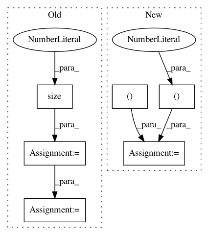

219b3f98001448eff5f2cbb5467940b6a2bfb4fe,data/aligned_dataset.py,AlignedDataset,__getitem__,#AlignedDataset#Any#,19
Before Change
(self.opt.loadSize * 2, self.opt.loadSize), Image.BICUBIC)
AB = transforms.ToTensor()(AB)
w_total = AB.size(2)
w = int(w_total / 2)
h = AB.size(1)
if self.center_crop:
w_offset = int(round((w - self.opt.fineSize) / 2.0))
h_offset = int(round((h - self.opt.fineSize) / 2.0))
else:
w_offset = random.randint(0, max(0, w - self.opt.fineSize - 1))
h_offset = random.randint(0, max(0, h - self.opt.fineSize - 1))
After Change
w, h = AB.size
w2 = int(w / 2)
A = AB.crop((0, 0, w2, h)).resize((self.opt.loadSize, self.opt.loadSize), Image.BICUBIC)
B = AB.crop((w2, 0, w, h)).resize((self.opt.loadSize, self.opt.loadSize), Image.BICUBIC)
A = transforms.ToTensor()(A)
B = transforms.ToTensor()(B)
w_offset = random.randint(0, max(0, self.opt.loadSize - self.opt.fineSize - 1))
h_offset = random.randint(0, max(0, self.opt.loadSize - self.opt.fineSize - 1))
In pattern: SUPERPATTERN
Frequency: 3
Non-data size: 6
Instances
Project Name: junyanz/BicycleGAN
Commit Name: 219b3f98001448eff5f2cbb5467940b6a2bfb4fe
Time: 2018-09-03
Author: junyanzhu89@gmail.com
File Name: data/aligned_dataset.py
Class Name: AlignedDataset
Method Name: __getitem__
Project Name: rusty1s/pytorch_geometric
Commit Name: 18f7a20f9098da9bd848e31b501b6b1c571accc1
Time: 2020-06-27
Author: matthias.fey@tu-dortmund.de
File Name: test/nn/conv/test_appnp.py
Class Name:
Method Name: test_appnp
Project Name: rusty1s/pytorch_geometric
Commit Name: 5a9c6aa03ea55ad85601c0c33ff762d6a2e2c7fa
Time: 2020-05-23
Author: matthias.fey@tu-dortmund.de
File Name: torch_geometric/nn/models/node2vec.py
Class Name: Node2Vec
Method Name: loss